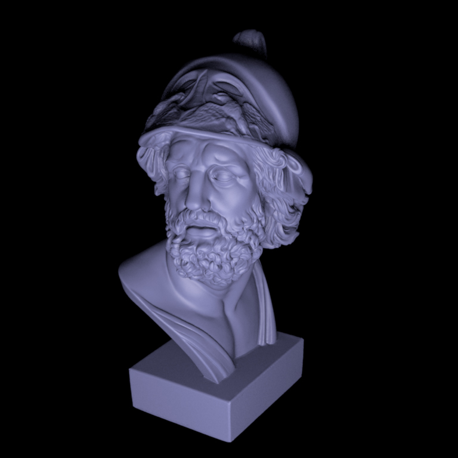
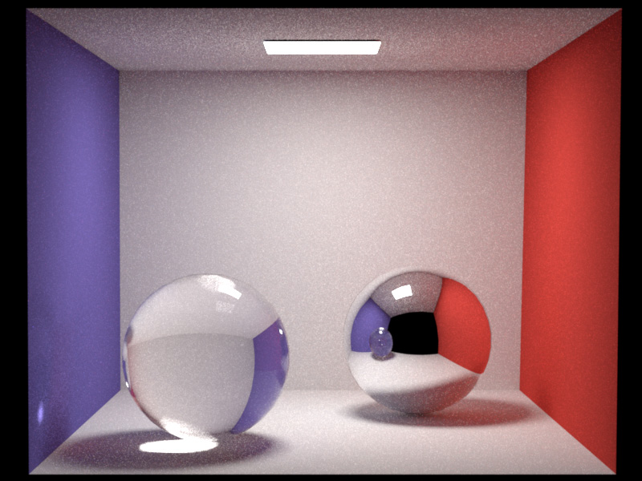
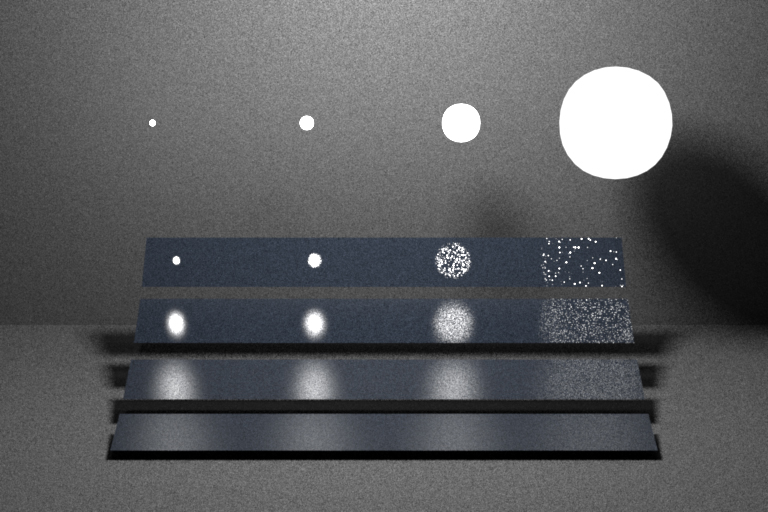
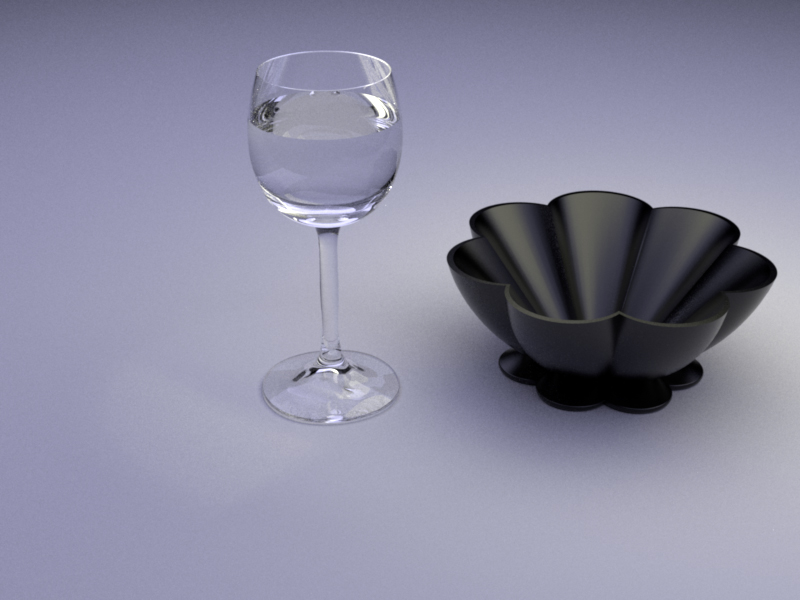
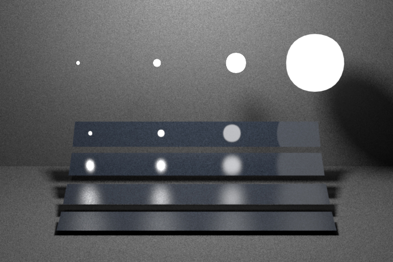
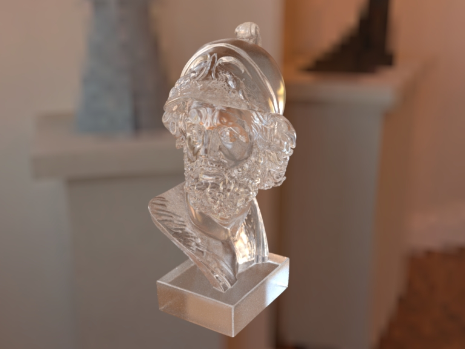
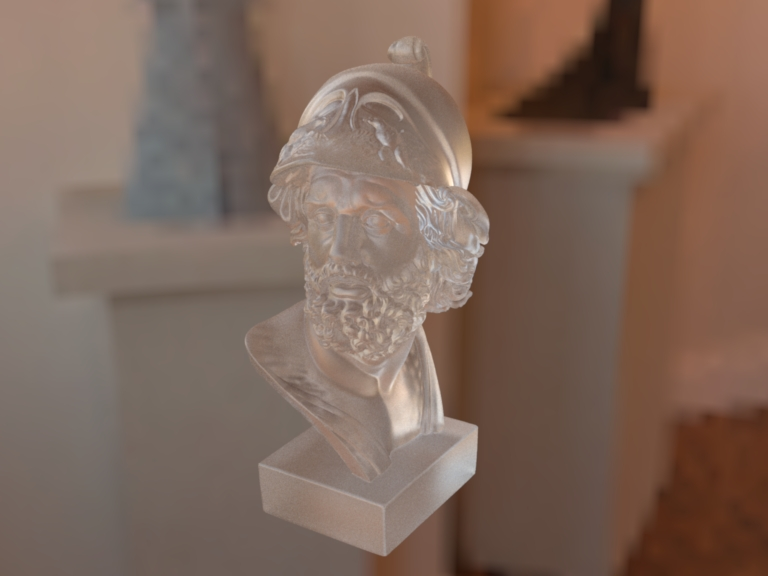

\[
   \def\bold#1{\boldsymbol{ #1} }
\]
<div>
    <h2>Overview</h2>
    <p>
        This assignment marks the culmination of the previous sequence of
        homeworks. You will get to build a path tracer that accounts for global
        illumination to render realistic images featuring interreflection
        between objects with advanced reflectance models that account for
        surface roughness. Your implementation will rely on two distinct
        sampling strategies and combine them using <em>multiple importance
        sampling</em> (MIS) to give preference to each strategy where it
        performs best.
    </p>
    <p>
        As usual, begin by importing the latest base code updates into your
        repository by running
    </p>
<pre class="prettyprint lang-bash">
git pull https://github.com/wjakob/nori
</pre>
    <p>
        If there were any concurrent changes to the same file, you
        may have to perform a <em>merge</em> (see the git tutorials under
        "Preliminaries" for more information).
    </p>

	<h3>Part 1: Microfacet BRDF <em>(60 points)</em></h3>
    <div class="row" style="margin: 30px">
        <div class="col-md-6">
            <div class="thumbnail" style="margin: 10px">
                <a class="fancybox" href="images/ajax-smooth.jpg"></a>
                <div class="caption">
                    The Ajax bust rendered with a relatively smooth (\(\alpha=0.08\)) microfacet BRDF.
                </div>
            </div>
        </div>
        <div class="col-md-6">
            <div class="thumbnail" style="margin: 10px">
                <a class="fancybox" href="images/ajax-rough.jpg"></a>
                <div class="caption">
                    The Ajax bust rendered with a relatively rough (\(\alpha=0.28\)) microfacet BRDF.
                </div>
            </div>
        </div>
    </div>
    <p>
    In this part we will extend the rudimentary interface in <tt>microfacet.cpp</tt> into a full-fledge reflectance model based on the <em>microfacet theory</em> presented in class. This utilizes the sampling techniques for the Beckmann distribution that you implemented in a previous assignment. The process is split into two parts:
   </p>
    <h4>Part 1.1: Evaluating the Microfacet BRDF (10 pts)</h4>
    <p>
    The Microfacet BRDF in <code>src/microfacet.cpp</code> will be used to simulate platic-like materials. It consists of a linear blend between a diffuse BRDF (to simulate a potentially colored reflection from the interior of the material) and a rough dielectric microfacet BRDF (to simulate a non-colored specular reflection from the rough boundary). Implement <code>Microfacet::eval()</code> which evaluates the described microfacet BRDF for a given pair of directions in the local shading coordinate frame:
        \[
            f_r(\bold{\omega_i},\bold{\omega_o}) = \frac{k_d}{\pi} + {k_s} \frac{D(\bold{\omega_{h}})~
            F\left({(\bold{\omega_h} \cdot \bold{\omega_i})}, \eta_{e},\eta_{i}\right)~
            G(\bold{\omega_i},\bold{\omega_o},\bold{\omega_{h}})}{4 \cos{\theta_i} \cos{\theta_o}\cos\theta_h}, ~~
            \bold{\omega_{h}} = \frac{\left(\bold{\omega_i} + \bold{\omega_o}\right)}{\left|\left|\bold{\omega_i} + \bold{\omega_o}\right|\right|_2}
        \]
        Here, \(k_d \in [0,1]^3\) is the RGB diffuse reflection coefficient, \(k_s = 1 - \max(k_d)\), \(F\) is the Fresnel reflection coefficient (check <tt>common.cpp</tt>), \(\eta_e\) is the exterior index of refraction and \(\eta_i\) is the interior index of refraction.
        The various \(\cos\theta_k\) cosine factors relate to the angle that the corresponding direction \(\bold{\omega_k}\) makes with the Z axis in the local coordinate system.
        The shadowing term uses the rational function approximation defined in class:
        \[
            G(\bold{\omega_i},\bold{\omega_o},\bold{\omega_{h}}) = G_1(\bold{\omega_i},\bold{\omega_{h}})~G_1(\bold{\omega_o},\bold{\omega_{h}}),
        \]

        \[
            G_1(\bold{\omega_v},\bold{\omega_h}) = \chi^+\left(\frac{\bold{\omega_v}\cdot\bold{\omega_h}}{\bold{\omega_v}\cdot\bold{n}}\right)
            \begin{cases}
                \frac{3.535b+2.181b^2}{1+2.276b+2.577b^2}, & b \lt 1.6, \\
                1, 										  & \text{otherwise},
            \end{cases} \\

            b = (a \tan{\theta_v})^{-1}, ~~

            \chi^+(c) =
            \begin{cases}
                1, & c > 0, \\
                0, & c \le 0,
            \end{cases} \\

        \]
        where \(\theta_v\) is the angle between the surface normal \(\bold{n}\)
        and the \(\omega_v\) argument of \(G_1\).
    </p>
    <p>
        Recall the <em>Beckmann</em> distribution from PA3, which is used to model the probability density of normals on a random rough surface:
        \[
        D(\theta, \phi) = \underbrace{\frac{1}{2\pi}}_{\text{azimuthal part}}\ \cdot\ \underbrace{\frac{2 e^{\frac{-\tan^2{\theta}}{\alpha^2}}}{\alpha^2 \cos^3 \theta}}_{\text{longitudinal part}}\!\!\!.
        \]
        Note that this definition is slightly different from the one shown in class: the density includes an extra cosine factor for normalization purposes so that it integrates to one over the hemisphere.
    </p>
    <h4>Part 1.2: Sampling the Microfacet BRDF (10 pts)</h4>
    <p>
        In this part you will generate samples according to the following density function:
        \[
            k_s ~ D(\omega_h) ~ J_h + (1-k_s) \frac{\cos{\theta_o}}{\pi}
        \]
        where \(\omega_o\) is sampled and \(J_h = (4 (\omega_h \cdot \omega_o))^{-1}\)
        is the Jacobian of the half direction mapping discussed in class.

        This an be done using the following sequence of steps:
    </p>
    <ol>
        <li>Decide between a diffuse or a specular reflection by comparing a uniform variate \(\xi_1\) against \(k_s\)</li>
        <li>Scale and potentially offset the uniform variate \(\xi_1\) so that it can be reused for a later sampling step</li>
        <li>In the diffuse case, generate a cosine-weighted direction on the sphere following the approach in <tt>src/diffuse.cpp</tt></li>
        <li>In the specular case:
            <ol>
                <li>Sample a normal from the Beckmann distribution using <code>Warp::squareToBeckmann</code> that you previously implemented in PA3.</li>
                <li>Reflect the incident direction using this normal to generate an outgoing direction.</li>
            </ol>
        </li>
    </ol>
    <p>
        Note that you will need to implement both <code>Microfacet::sample()</code> and <code>Microfacet::pdf()</code> to be able to run the following tests.
    </p>
    <h4>Validation</h4>
    <p>
        To obtain the full set of points for the previous exercises, you will
        need to validate the correctness of your code. The base code
        includes two XML files containing sequences of statistical tests that a
        correct implementation should be able to pass.
        <ul>
            <li><tt>scenes/pa5/tests/chi2test-microfacet.xml</tt>, </li>
            <li><tt>scenes/pa5/tests/ttest-microfacet.xml</tt></li>
        </ul>

        Next, use your <tt>whitted</tt> integrator from the previous
        assignment to render a microfacet Ajax bust and ensure that you can
        match our references:
        <ul>
            <li><tt>scenes/pa5/ajax/ajax-rough.xml</tt> (reference: <a href="https://rgl.s3.eu-central-1.amazonaws.com/media/uploads/wjakob/2017/04/06/ajax-rough.exr">ajax-rough.exr</a>)
            </li>
            <li><tt>scenes/pa5/ajax/ajax-smooth.xml</tt> (reference: <a href="https://rgl.s3.eu-central-1.amazonaws.com/media/uploads/wjakob/2017/04/06/ajax-smooth.exr">ajax-smooth.exr</a>)
            </li>
        </ul>
        The <tt>warptest</tt>GUI also contains
        a \(\chi^2\) test for the BRDF model, but this is just to facilitate debugging and
        visualization; the XML files are the real validation benchmark.
        Mention in your report if running these tests produces any errors.
    </p>
    <h3>Part 2: <tt>path_mats</tt> Brute force path tracer <em>(15 points)</em></h3>
	<h3>Part 3: <tt>path_ems</tt> Path tracer with next event estimation <em>(15 points)</em></h3>
    <div class="row" style="margin: 30px">
        <div class="col-md-6">
            <div class="thumbnail" style="margin: 10px">
                <a class="fancybox" href="images/cbox-gi.jpg"></a>
                <div class="caption">
                    The Cornell box rendered using the simple path tracer. Note
                    the indirect illumination on the ceiling and the light
                    focusing behavior of the sphere.
                </div>
            </div>
        </div>
        <div class="col-md-6">
            <div class="thumbnail" style="margin: 10px">
                <a class="fancybox" href="images/veach_path_simple.jpg"></a>
                <div class="caption">
                    The Veach material test scene. Notice the significant variance
                    for the top bar (shiniest) reflecting the largest light source.
                    The path tracer with multiple importance sampling will address this issue.
                </div>
            </div>
        </div>
    </div>
    <p>
        In Assignment 4, you implemented a Whitted-style integrator that
        performed area light sampling on diffuse objects and BRDF sampling on
        specular objects. Now you'll extend this approach into a full path
        tracer that accounts for indirect illumination as well. We'll begin
        with a "simple" path tracer named <code>src/path_simple.cpp</code> that
        does not (yet) use <em>multiple importance sampling</em> (this
        corresponds to "Path Tracing with explicit shadow rays" discussed
        during lecture). The second step involves adding MIS to create a
        full-featured path tracer that combines both sampling strategies to
        reduce variance.
    </p>
    <p>This simple path tracer differs from <code>src/whitted.cpp</code> in the following ways:</p>
    <ol>
        <li>When the camera ray hits a light source, the value returned by
            <code>Li()</code> should include the emitted radiance to account for directly visible light sources.</li>
        <li>Instead of sampling a position on the light source <em>or</em> the
            BRDF, both are now done in each iteration. The direction sampled
            from the BRDF is used to estimate the indirect illumination
            component. This could be implemented using recursion, or more
            efficiently using a loop.
        </li>
    </ol>
    <p>
    Use your implementation to render
    </p>
    <ol>
        <li>The Cornell box in <code>scenes/pa5/cbox/cbox.xml</code>
            (reference: <a href="https://rgl.s3.eu-central-1.amazonaws.com/media/uploads/wjakob/2017/04/07/cbox.exr">cbox.exr</a>).</li>
        <li>The Veach material test scene in <code>scenes/pa5/veach_mi/veach_path_simple.xml</code>
            (reference: <a href="https://rgl.s3.eu-central-1.amazonaws.com/media/uploads/wjakob/2017/04/07/veach_path_simple.exr">veach_path_simple.exr</a>).</li>
        <li>The table test scene in <code>scenes/pa5/table/table_path_simple.xml</code>
            (reference: <a href="https://rgl.s3.eu-central-1.amazonaws.com/media/uploads/wjakob/2017/04/07/table_path_simple.exr">table_path_simple.exr</a>).</li>
    </ol>
    <p>
    The first scene only uses diffuse and specular materials and can be
    used to test your path tracer if you didn't do part 1 of this assignment
    yet. The latter two assume that the microfacet model BRDF is ready.
    </p>
	<h3>Part 4: <tt>path_mis</tt> Path tracer with Multiple Importance Sampling <em>(25 points)</em></h3>
    <div class="row" style="margin: 30px">
        <div class="col-md-6">
            <div class="thumbnail" style="margin: 10px">
                <a class="fancybox" href="images/table_path.jpg"></a>
                <div class="caption">
                    Table scene featuring a water-filled glass and a bowl modeled using
                    a microfacet material.
                </div>
            </div>
        </div>
        <div class="col-md-6">
            <div class="thumbnail" style="margin: 10px">
                <a class="fancybox" href="images/veach_path.jpg"></a>
                <div class="caption">
                    The Veach material test scene, now rendered using MIS.
                </div>
            </div>
        </div>
    </div>
    <p>
        Following part 3, extend your path tracer with multiple importance sampling. This specifically entails:
    </p>
    <ol>
        <li>When generating a sample on a light source, determine the density of this
            sampling strategy. Also compute the density (using <code>BSDF::pdf()</code>) with which the BRDF sampling strategy <em>would hypothetically</em> have sampled the same direction.</li>
        <li> Weight the contribution of the light source sample using the following formula
            known as the <em>balance heuristic</em>:
            \[
            w_\mathrm{Light}(p_\mathrm{Light}, p_\mathrm{BRDF}) = \frac{p_\mathrm{Light}}{p_\mathrm{Light} + p_\mathrm{BRDF}}.
            \]
            Remember that this only makes sense if both probabilities are expressed in
            the same <em>measure</em> (i.e. with respect to solid angles or unit area). This
            means that you will have convert one of them to the measure of the other (which one doesn't matter).
        </li>
        <li> When generating a BRDF sample (which would normally only be used to estimate
            the indirect illumination component), check if it hits a light source.
            In this case, also use this sample to estimate the <em>direct</em> illumination
            component at the current vertex.
        </li>
        <li>
            Once more, estimate the probability with which light source sampling <em>would hypothetically</em> have sampled this point, and weight the contribution of the sample using the balance heuristic:
            \[
            w_\mathrm{BRDF}(p_\mathrm{Light}, p_\mathrm{BRDF}) = \frac{p_\mathrm{BRDF}}{p_\mathrm{Light} + p_\mathrm{BRDF}}.
            \]
            Note the changed numerator in the above expression.
        </li>
    </ol>
    <p>
    Use your implementation to render
    </p>
    <ol>
        <li>The Veach material test scene in <code>scenes/pa5/veach_mi/veach_path.xml</code>
            (reference: <a href="https://rgl.s3.eu-central-1.amazonaws.com/media/uploads/wjakob/2017/04/07/veach_path.exr">veach_path.exr</a>).</li>
        <li>The table test scene in <code>scenes/pa5/table/table_path.xml</code>
            (reference: <a href="https://rgl.s3.eu-central-1.amazonaws.com/media/uploads/wjakob/2017/04/07/table_path.exr">table_path.exr</a>).</li>
    </ol>

	<h3> Hacker Points: refraction through rough dielectrics<em> (20 points)</em></h3>
<div class="alert alert-info" role="alert"><b>Disclaimer</b>: Hacker points are “underpriced” bonus points
for the daring few. Sometimes you might be required to implement something that was not taught in class and
you might have to do some research and creative thinking. Hacker Points are awarded only to students who
implemented all of the remaining assignment, and they are added to the final score.
</div>
    <div class="row" style="margin: 30px">
        <div class="col-md-6">
            <div class="thumbnail" style="margin: 10px">
                <a class="fancybox" href="images/ajax-rdiel1.jpg"></a>
                <div class="caption">
                    Rendering of the Ajax bust with a slightly rough refractive material.
                </div>
            </div>
        </div>
        <div class="col-md-6">
            <div class="thumbnail" style="margin: 10px">
                <a class="fancybox" href="images/ajax-rdiel2.jpg"></a>
                <div class="caption">
                    Rendering of the Ajax bust with a <em>very</em> rough refractive material.
                </div>
            </div>
        </div>
    </div>

	<p>
        For this part your task is to extend the rough dielectric BRDF into a
        complete <em>BSDF</em> that also accounts for refraction. You will also
        want to remove the diffuse component as well as the \(k_d\) parameter.
        Begin by reading the paper <em><a href="https://www.cs.cornell.edu/~srm/publications/EGSR07-btdf.html">Microfacet Models for Refraction through Rough Surfaces</a></em> by
         Bruce Walter, Stephen R. Marschner, Hongsong Li, and Kenneth E.
         Torrance.
    </p>
    <p>
        To support rough refraction, you implementation will need to randomly
        choose between the reflection and the refraction component based on the
        Fresnel coefficient. Follow the instructions in the paper by Walter et
        al. to add the latter case based on the generalized half-direction
        vector for refraction.
    </p>

	<h4> What to submit </h4>
	<p>
		<ul>
            <li> A discussion of how you chose to implement the Walter et al. paper in Nori. </li>
            <li> The code of your new <code>roughdielectric</code> BSDF.</li>
            <li> At least two refractive renderings of the Ajax scene with different roughness values.</li>
            <li> Results of Chi^2 tests, which demonstrate that your sampling technique works correctly.</li>
		</ul>
	</p>
</div>
